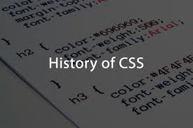
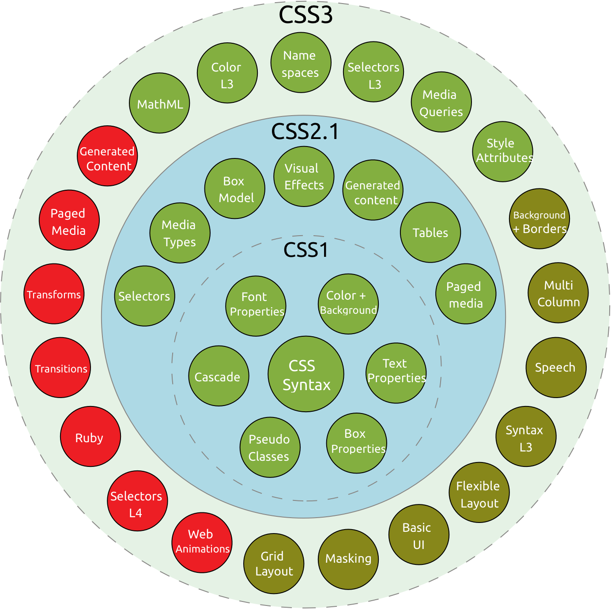
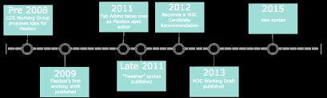
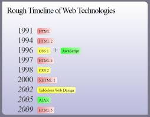

The saga of CSS starts in 1994. Håkon Wium Lie works at CERN – the cradle of
the Web – and the Web is starting to be used as a platform for electronic
publishing. One crucial part of a publishing platform is missing, however:
There is no way to style documents. For example, there is no way to describe
a newspaper-like layout in a Web page. Having worked on personalized newspaper
presentations at the MIT Media Laboratory, Håkon saw the need for a style sheet
language for the Web.
Style sheets in browsers were not an entirely new idea. The separation of
document structure from the document's layout had been a goal of HTML from its
inception in 1990. Tim Berners-Lee wrote his NeXT browser/editor in such a way
that he could determine the style with a simple style sheet. However, he didn't
publish the syntax for the style sheets, considering it a matter for each
browser to decide how to best display pages to its users. In 1992, Pei Wei
developed a browser called Viola, which had its own style sheet language.
However, the browsers that followed offered their users fewer and fewer
options to influence the style. In 1993, NCSA Mosaic, the browser that made
the Web popular, came out. Stylewise, however, it was a backward step
because it only allowed its users to change certain colors and fonts.
Meanwhile, writers of Web pages complained that they didn't have enough
influence over how their pages looked. One of the first questions from an
author new to the Web was how to change fonts and colors of elements. At
that time, HTML did not provide this functionality – and rightfully so.
This excerpt from a message sent to the www-talk mailing list early in
1994 gives a sense of the tensions between authors and implementors:
In fact, it has been a constant source of delight for me over the past year
to get to continually tell hordes (literally) of people who want to --
strap yourselves in, here it comes -- control what their documents look
like in ways that would be trivial in TeX, Microsoft Word, and every other
common text processing environment: "Sorry, you're screwed."
The author of the message was Marc Andreessen, one of the programmers
behind NCSA Mosaic. He later became a co-founder of Netscape, a company eager
to fulfill the request of authors. On October 13, 1994, Marc Andreessen
announced to www-talk that the first beta release of Mozilla (which later
turned into Netscape Navigator) was available for testing. Among the new
tags the new browser supported was center, and more tags were to follow shortly.
Three days before Netscape announced the availability of its new browser,
Håkon published the first draft of the Cascading HTML Style Sheets proposal.
Behind the scenes, Dave Raggett (the main architect of HTML 3.0) had encouraged
the release of the draft to go out before the upcoming Mosaic and the Web
conference in Chicago. Dave had realized that HTML would and should never
turn into a page-description language and that a more purpose-built mechanism
was needed to satisfy requirements from authors. Although the first version
of the document was immature, it provided a useful basis for discussion.
Among the people who responded to the first draft of CSS was Bert Bos. At
that time, he was building Argo, a highly customizable browser with style
sheets, and he decided to join forces with Håkon. Both of the two proposals
look different from present-day CSS, but it is not hard to recognize the original concepts.
One of the features of the Argo style language was that it was general
enough to apply to other markup languages in addition to HTML. This also
became a design goal in CSS and HTML was soon removed from the title of
the specification. Argo also had other advanced features that didn't make
it into CSS1, in particular, attribute selectors and generated text. Both
features had to wait for CSS2.
Cascading Style Sheets wasn't the only proposed style language at the
time. There was Pei Wei's language from the Viola browser, and around
10 other proposals for style sheet languages were sent to the www-talk
and www-html mailing lists. Then, there was DSSSL, a complex style and
transformation language under development at ISO for printing SGML
documents. DSSSL could conceivably be applied to HTML as well. But,
CSS had one feature that distinguished it from all the others: It took
into account that on the Web, the style of a document couldn't be designed
by either the author or the reader on their own, but that their wishes
had to be combined, or cascaded, in some way; and, in fact, not just the
reader's and the author's wishes, but also the capabilities of the display
device and the browser.
As planned, the initial CSS proposal was presented at the Web conference
in Chicago in November 1994. The presentation at Developer's Day caused much
discussion. First, the concept of a balance between author and user preferences
was novel. A fictitious screen shot showed a slider with the label user on
one side and author on the other. By adjusting the slider, the user could
change the mix of his own preferences and those of the author. Second, CSS
was perceived by some as being too simple for the task it was designed for.
They argued that to style documents, the power of a full programming language
was needed. CSS went in the exact opposite direction by making a point out of
being a simple, declarative format.
At the next WWW conference in April 1995, CSS was presented again. Both Bert
and Håkon were there (in fact, this was the first time they met in person)
and this time, they could also show implementations. Bert presented the support
for style sheets in Argo, and Håkon showed a version of the Arena browser that
had been modified to support CSS. Arena had been written by Dave Raggett as a
testbed for new ideas, and one of them was style sheets. What started out as
technical presentations ended up in political discussions about the author-reader
balance. Representatives from the author side argued that the author ultimately
had to be in charge of deciding how documents were presented. For example, it
was argued that there may be legal requirements on how warning labels had to
be printed and the user should not be able to reduce the font size for such
warnings. The other side, where Bert and Håkon belong, argued that the user,
whose eyes and ears ultimately have to decode the presentation, should be
given the last word when conflicts arise.
Outside of the political battles, the technical work continued. The www-style
mailing list was created in May 1995, and the discussions there have often
influenced the development of the CSS specifications. Almost 10 years later,
there were more than 16,000 messages in the archives of the mailing list.
And after 20 years, more than 80,000!
In 1995, the World Wide Web Consortium (W3C) also became operational. Companies
were joining the Consortium at a high rate and the organization became established.
Workshops on various topics were found to be a successful way for W3C members
and staff to meet and discuss future technical development. It was therefore
decided that another workshop should be organized, this time with style sheets
as the topic. The W3C technical staff working on style sheets (namely Håkon
and Bert) were now located in Sophia-Antipolis in Southern France where W3C
had set up its European site. Southern France is not the worst place to lure
workshop participants to, but because many of the potential participants were
in the U.S., it was decided to hold the workshop in Paris, which is better
served by international flights. The workshop was also an experiment to see
if it was possible for W3C to organize events outside the U.S. Indeed, this
turned out to be possible, and the workshop was a milestone in ensuring style
sheets their rightful place on the Web. Among the participants was Thomas
Reardon of Microsoft, who pledged support for CSS in upcoming versions of
Internet Explorer.
At the end of 1995, W3C set up the HTML Editorial Review Board (HTML ERB)
to ratify future HTML specifications. Because style sheets were within the
sphere of interest of the members of the new group, the CSS specification
was taken up as a work item with the goal of making it into a W3C
Recommendation. Among the members of the HTML ERB was Lou Montulli of
Netscape. After Microsoft signaled that it was adding CSS support in its
browser, it was also important to get Netscape on board. Otherwise, we
could see the Web diverge in different directions with browsers supporting
different specifications. The battles within the HTML ERB were long and hard,
but CSS level 1 finally emerged as a W3C Recommendation in December 1996.
In February 1997, CSS got its own working group inside W3C and the new group
set out to work on the features which CSS1 didn't address. The group was
chaired by Chris Lilley, a Scotsman recruited to W3C from the University
of Manchester. CSS level 2 became a Recommendation in May 1998. Since then,
the group has worked in parallel on new CSS modules and errata for CSS 2.
The W3C working group has members (around 15 in 1999, around 115 in 2016)
who are delegated by the companies and organizations that are members of W3C.
They come from all over the world, so the meetings are usually over the phone,
and last about an hour every week. About four times each year, they meet
somewhere in the world.
HTML History
The history of hypertext markup language is a strange and interesting tale.
From its simple start as an online subset of SGML through political maneuverings
of the huge browser companies to its current piecemeal – but growing –
compatibility, the language has weathered a storm of growth, abuse, and
innovation. Recently, the battle for control of the standard has focused on
functionality. Microsoft and Netscape are both touting W3C compliance as a
crucial marketing advantage. And the work being done on the latest HTML draft
shows there may be light at the end of the tunnel.
But it wasn't always this rosy.
The idea behind HTML was a modest one. When Tim Berners-Lee was putting together
his first elementary browsing and authoring system for the Web, he created a
quick little hypertext language that would serve his purposes. He imagined dozens,
or even hundreds, of hypertext formats in the future, and smart clients that
could easily negotiate and translate documents from servers across the Net. It
would be a system similar to Claris XTND on the Macintosh, but would work on
any platform and browser.
The problem, however, turned out to be in the simplicity of Berners-Lee's language.
Since it was text-based, you could use any editor or word processor to create or
convert documents for the Web. And there was just a handful of tags – anyone
could master HTML in an afternoon. The Web flourished. Everyone started
publishing. The rest is history.
But as more and more content moved to the Web, those creating browsers
realized the simple markup language needed much improvement. How should
the innovation take place? Tim Berners-Lee certainly wasn't going to be the
sole developer of HTML – he never intended to be. So the developers, in the
long-held tradition of the Internet, implemented new features in their browsers
and then shipped them. If the Web community liked them, they stayed. If not,
they were removed.
Look, for example, at the addition of images to the Web. Early browsers were
simply text-based, and there was an immediate desire to display figures and
icons inline on a page. In 1993, a debate was exploding on the fledgling HTML
mailing list, and finally a college student named Marc Andreessen added
to his Mosaic browser. People objected, saying it was too limited. They wanted
or
Mosaic shipped with , Tim went off to the nascent World Wide Web Consortium,
and Marc left for California to start a little browser company called Netscape.
HTML continued to grow, with new, powerful, and exciting tags. We got ,
, , and of course,
Something needed to give. If things kept up the way they were going, Netscape
and Microsoft would eventually have two completely proprietary versions of HTML,
but with no way of supporting the utopian vision of content negotiation. Instead,
people would be forced to choose one browser or the other, and surf content
specifically created for that platform. Content providers would either have to
choose between vendors or spend more resources creating multiple versions of
their pages.
There are still vestiges of this lingering on today's Web, but not the nightmare
scenario that was anticipated. The HTML arm of the W3C changed course and started
collecting and recording current practice in shipping browsers, rather than
designing a future, unattainable version of the language. HTML3 was dropped
entirely, and work began on HTML3.2, which, ironically, was far less technologically
advanced than its predecessor. But, more importantly, it was realistic in its
goal to give content providers and browser developers a common, if dated, reference
from which to work.
So there's one big happy family now, right? Netscape, Microsoft, and the W3C
are all working hard together to create the brightest HTML future possible, right?
Well, reality isn't always that clean. Even recently, the standards wars have
flared up over things like vs. CSS positioning, or the two competing
webcasting proposals. But for the moment, at least we have a process in place
for dealing with these issues.
And the process is continuing; we should see HTML4 this year. Currently
referred to by its code name, "Cougar," the draft includes a slew of technologies
being added to current browsers: stylesheets, scripting, frames, and more. We'll
take a look at this draft in detail next week.
 The history of hypertext markup language is a strange and interesting tale.
From its simple start as an online subset of SGML through political maneuverings
of the huge browser companies to its current piecemeal – but growing –
compatibility, the language has weathered a storm of growth, abuse, and
innovation. Recently, the battle for control of the standard has focused on
functionality. Microsoft and Netscape are both touting W3C compliance as a
crucial marketing advantage. And the work being done on the latest HTML draft
shows there may be light at the end of the tunnel.
But it wasn't always this rosy.
The history of hypertext markup language is a strange and interesting tale.
From its simple start as an online subset of SGML through political maneuverings
of the huge browser companies to its current piecemeal – but growing –
compatibility, the language has weathered a storm of growth, abuse, and
innovation. Recently, the battle for control of the standard has focused on
functionality. Microsoft and Netscape are both touting W3C compliance as a
crucial marketing advantage. And the work being done on the latest HTML draft
shows there may be light at the end of the tunnel.
But it wasn't always this rosy.